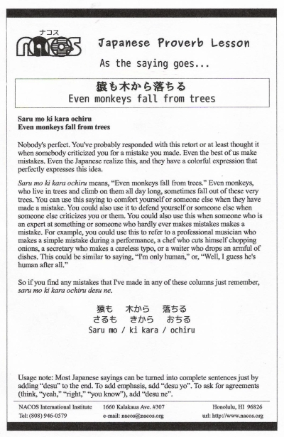

Saru mo ki kara ochiru
Even monkeys fall from trees
Nobody's perfect. You've probably responded with this retort or at least thought it when somebody criticized you for a mistake you made. Even the best of us make mistakes. Even the Japanese realize this, and they have a colorful expression that perfectly expresses this idea.
Saru mo ki kara ochiru means, “Even monkeys fall from trees.” Even monkeys, who live in trees and climb on them all day long, sometimes fall out of these very trees. You can use this saying to comfort yourself or someone else when they have made a mistake. You could also use it to defend yourself or someone else when someone else criticizes you or them. You could also use this when someone who is an expert at something or someone who hardly ever makes mistakes makes a mistake. For example, you could use this to refer to a professional musician who makes a simple mistake during a performance, a chef who cuts himself chopping onions, a secretary who makes a careless typo, or a waiter who drops an armload of dishes. This could be similar to saying, “I'm only human,” or, “Well, I guess he's human after all.”
So if you find any mistakes that I've made in any of these columns just remember, saru mo ki kara ochiru desu ne.
Usage note: Most Japanese sayings can be turned into complete sentences just by adding “desu” to the end. To add emphasis, add “desu yo”. To ask for agreements (think, “yeah,” “right,” “you know”), add “desu ne”.

| © 1995-2013 NACOS International Institute. All Rights Reserved. |